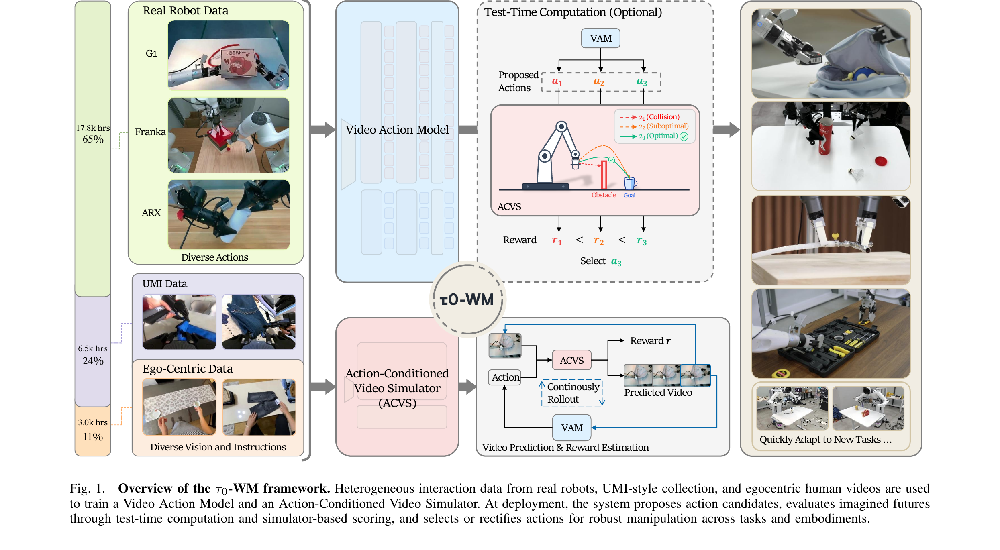
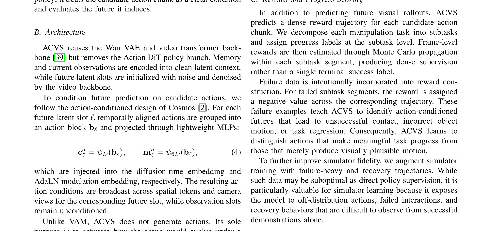
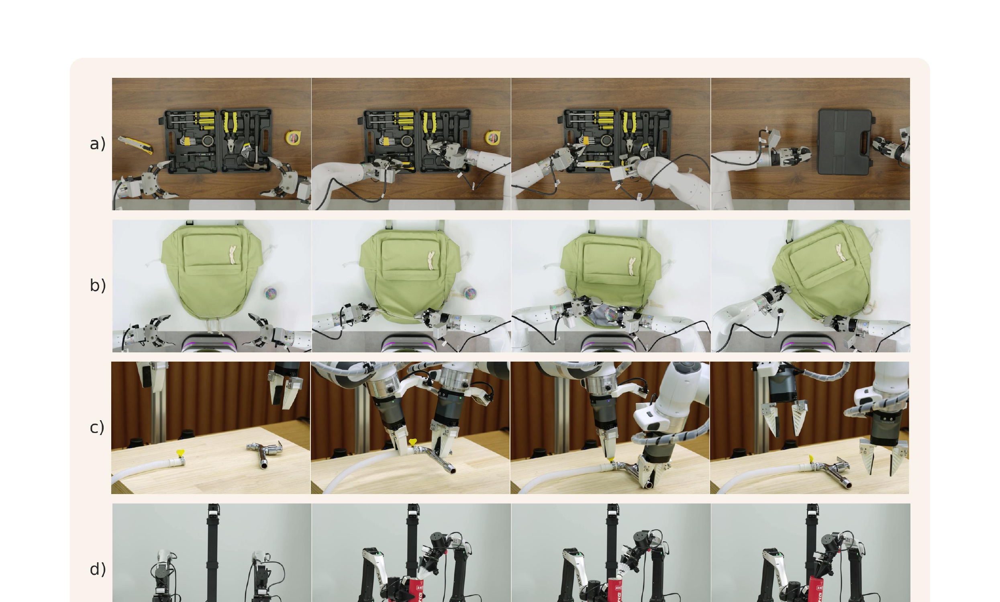
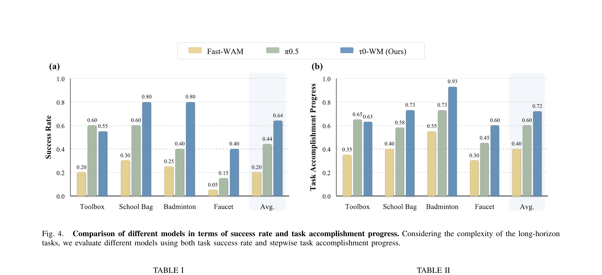

核心洞见：为什么要把动作和视频"合并"？
机器人要做一件事，需要两种能力：能生成动作（VAM，知道手往哪儿移）和能预测后果（ACVS，想象这样做完场景会变成什么样）。过去这两件事是分开的两个模型。τ₀-WM 的核心洞见是：这两件事共享同一个"视频预测骨干"——就像司机的脑子里用同一套世界认知来开车和预判危险，不需要两套脑子。把它们统一之后，不仅省参数，还能让预测能力在推理时直接增强动作质量。
传统机器人操作策略只学"观测→动作"映射，完全不管执行后世界会变成什么样。视频预测模型学物理规律但不输出可执行指令。τ₀-WM 认为这两个目标本质上共享同一套预测性世界表征，因此把它们统一进单个视频扩散骨干（Wan 2.2 · 5B 参数），对外暴露两个接口：
① 统一框架：VAM + ACVS 共享视频扩散骨干，策略学习与动态建模同步训练。
② 异质数据整合：27.3K 小时机器人 + UMI + 自我中心视频，用模态监督掩码统一训练。
③ 推理时计算（TTC）：先用轻量 RCS 筛候选，再用 ACVS 对低质量候选做模拟+修正，推理即计划。
展开原文 · 统一框架动机
"Rather than separating policy learning from dynamics modeling, τ₀-WM builds both around a shared video diffusion backbone. This backbone exposes two complementary interfaces."

第 1 步：三类数据合流
真实机器人（65%）、UMI 风格（24%）、自我中心视频（11%）三流合并。关键：每类数据对应不同级别的监督信号，用模态掩码让它们各司其职，不强求统一格式。
输入是什么：已经采集的专家演示、机器人交互轨迹或评测样本。每条数据通常包含观测、动作，以及可能存在的奖励或下一状态。
这一步究竟做什么：真实机器人（65%）、UMI 风格（24%）、自我中心视频（11%）三流合并。关键：每类数据对应不同级别的监督信号，用 模态掩码 让它们各司其职，不强求统一格式。
输出到哪里：经过本步骤处理、含义更明确的中间结果。这个结果会交给下一步“VAM 学策略”继续处理。
为什么不能省略：学习算法只能从它见过的经历中改进；这一步决定训练数据是否覆盖成功、失败和恢复状态。
第 2 步：VAM 学策略
视频动作模型用 5B 视频 DiT 骨干，加 0.5B 动作分支，通过 cross-attention 让动作预测"看到"视频动态。同时预测未来视频 latent 和可执行动作块。
输入是什么：来自上一步“三类数据合流”的产物：经过本步骤处理、含义更明确的中间结果。本步骤还会按论文设置读取当前条件、时间步或训练信号。
这一步究竟做什么：视频动作模型用 5B 视频 DiT 骨干，加 0.5B 动作分支，通过 cross-attention 让动作预测"看到"视频动态。同时预测未来视频 latent 和可执行动作块。
输出到哪里：一组比原始输入更紧凑的内部特征；它不是最终动作或画面。这个结果会交给下一步“ACVS 学模拟”继续处理。
为什么不能省略：它承担上下两步之间的接口；缺少它，前一步产生的信息无法以正确格式或正确含义传到下一步。
第 3 步：ACVS 学模拟
动作条件视频模拟器复用同一个 5B 骨干（省参数！），但把候选动作作为条件注入。对同一场景下不同动作会产生不同的"想象展开"——这正是世界模型的核心能力。
输入是什么：来自上一步“VAM 学策略”的产物：一组比原始输入更紧凑的内部特征；它不是最终动作或画面。本步骤还会按论文设置读取当前条件、时间步或训练信号。
这一步究竟做什么：动作条件视频模拟器复用同一个 5B 骨干（省参数！），但把候选动作作为条件注入。对同一场景下不同动作会产生不同的"想象展开"——这正是世界模型的核心能力。
输出到哪里：一个或多个候选未来、动作或轨迹，以及必要的中间状态。这个结果会交给下一步“推理时计算（可选）”继续处理。
为什么不能省略：它承担上下两步之间的接口；缺少它，前一步产生的信息无法以正确格式或正确含义传到下一步。
第 4 步：推理时计算（可选）
VAM 先采样 N 个候选动作，用轻量 RCS 过滤。如果最好的候选也不够可靠（低于阈值 γ），才调用 ACVS 做更昂贵的模拟评估，选最优展开并修正动作。
输入是什么：来自上一步“ACVS 学模拟”的产物：一个或多个候选未来、动作或轨迹，以及必要的中间状态。本步骤还会按论文设置读取当前条件、时间步或训练信号。
这一步究竟做什么：VAM 先采样 N 个候选动作，用轻量 RCS 过滤。如果最好的候选也不够可靠（低于阈值 γ），才调用 ACVS 做更昂贵的模拟评估，选最优展开并修正动作。
输出到哪里：一个或多个候选未来、动作或轨迹，以及必要的中间状态。这个结果会交给下一步“实机部署”继续处理。
为什么不能省略：它承担上下两步之间的接口；缺少它，前一步产生的信息无法以正确格式或正确含义传到下一步。
第 5 步：实机部署
最终动作块在机器人上以 receding-horizon 方式执行（每次执行 chunk 的前几步，再重新推理）。支持三种机械臂平台，任务成功率平均 64%，显著超过 π₀.₅（44%）和 Fast-WAM（20%）。
输入是什么：来自上一步“推理时计算（可选）”的产物：一个或多个候选未来、动作或轨迹，以及必要的中间状态。本步骤还会按论文设置读取当前条件、时间步或训练信号。
这一步究竟做什么：最终动作块在机器人上以 receding-horizon 方式执行（每次执行 chunk 的前几步，再重新推理）。支持三种机械臂平台，任务成功率平均 64%，显著超过 π₀.₅（44%）和 Fast-WAM（20%）。
输出到哪里：可发送给机器人控制器的动作，以及执行后重新观测到的真实状态。这是图中这条链路的最终产物，随后会进入真实执行、模型更新或指标评测。
为什么不能省略：机器人动作会改变下一次观测；只有执行后重新读取现实，才能发现预测误差并阻止错误连续累积。
异质数据策略：让三类数据"各自贡献"
上一节说 VAM 要同时学视频预测和动作生成——问题来了：互联网上海量视频没有机器人动作标签，而真实机器人数据昂贵且场景窄。τ₀-WM 的解法是：三类数据联合训练，但用模态掩码让每个样本只监督它"知道"的损失。就像一个厨师团队：有人专攻刀工（机器人数据提供精准动作），有人专攻口感（UMI 数据提供多样场景），有人专攻食材知识（自我中心视频提供视觉规律）——各展所长，共享一套烹饪理论。
三种数据源
+ 展开/失败轨迹（用于奖励监督，数量未单独列出）
| 真实机器人遥操 | AGIBOT-G01、ARX、双臂 Franka；头部相机 + 腕部相机；提供精确的可执行动作标签（监督 VAM 动作分支 + ACVS 视频分支）。场景覆盖家庭、零售、工业。 |
| UMI 风格示教 | 用 Gen-DAS 夹爪装置收集；动作信号是"夹爪运动"而非机器人关节角，与部署机器人运动学不对齐，因此只用来监督视觉动态（VAM 视频分支）。 |
| 自我中心人类视频 | 来自 EgoVerse、Ropedia Xperience-10M 等；完全无机器人动作标签，只监督视频预测损失。覆盖最广泛的物体/接触/环境分布，是提升泛化的关键。 |
| 展开/失败轨迹 | rollout 轨迹提供任务进度标签；失败轨迹给 ACVS 负样本（负奖励），让模拟器学会区分"看起来合理但实际失败"的动作。 |
模态监督掩码：统一训练的关键
每个训练样本携带一个掩码，指定"哪些输入可观测、预测哪些目标、哪些损失激活"。这样：
- 真实机器人数据 → 激活视频预测损失 + 动作损失
- UMI / 人类视频 → 只激活视频预测损失（动作损失被掩掉）
- 失败轨迹 → 激活视频损失 + 奖励损失（奖励为负）
UMI 设备的末端执行器运动学与目标机器人的关节空间存在本质差异——直接用会引入错误的动作先验。论文明确将其定位为"scalable but weaker video-action supervision"，只监督视觉动态。§III-B, p.3
展开原文 · 统一监督层次
"The three sources induce a hierarchy of supervision. Real-robot data provides deployment-aligned action labels; UMI-style data provides diverse interaction trajectories with weaker action-like signals; and egocentric videos provide large-scale visual dynamics without action supervision."
视频动作模型 VAM：策略接口
上一节解决了"用什么数据"，这一节解决"模型长什么样"。VAM 是 τ₀-WM 对外的策略接口：给它当前多视角图像 + 语言指令 + 机器人状态，它同时吐出"未来的视频"和"下一步的动作块"。类比 GPS：不只告诉你"往左转"（动作），还在脑子里"模拟"出转完之后街景什么样（视频）——这两件事共用同一个"地图认知"（视频骨干）。
接口定义
- $\mathbf{o}_t$
- 当前时刻的多视角观测（多摄像头图像，经 Wan VAE 编码为 latent）
- $\mathbf{p}$
- 语言指令（如"把螺丝刀放进工具箱左边的槽"），通过 cross-attention 注入模型
- $\mathbf{s}_t$
- 机器人当前状态向量（关节角、末端执行器位姿等）
- $\hat{\mathbf{z}}_{t+1:t+H_v}$
- 预测的未来视频 latent 轨迹，跨越 $H_v$ 步时间窗口，可选择解码回像素空间
- $\hat{\mathbf{a}}_{t:t+H_a-1}$
- 预测的连续动作块，长度为 $H_a$，可直接在机器人上执行
架构：5B 视频 DiT + 0.5B 动作 DiT

联合 Flow Matching 训练目标
VAM 对未来视频 latent 和动作块同时做 flow matching。直觉：flow matching 就像导航 GPS 在噪声时空中学习"从哪来、往哪走"的速度场，VAM 用同一个速度场框架同时导航视频像素空间和动作空间。
- $f_\theta^z(\tilde{\mathbf{z}}, u_z, \mathbf{c}_t, \mathbf{p})$
- 视频分支的速度场预测头（video vector field head）。输入：加噪视频 latent $\tilde{\mathbf{z}}$、噪声水平 $u_z$、干净的视觉上下文 $\mathbf{c}_t$（当前帧）、语言指令 $\mathbf{p}$。
- $\mathbf{v}_z$
- 视频的真实速度目标：flow matching 中从噪声 $\mathbf{z}_0$ 到真实未来帧 $\mathbf{z}_1$ 的线性插值速度 $\mathbf{z}_1 - \mathbf{z}_0$。
- $f_\theta^a(\tilde{\mathbf{a}}, u_a, \mathbf{s}_t, \mathbf{h})$
- 动作分支的速度场预测头（action vector field head）。输入：加噪动作 $\tilde{\mathbf{a}}$、噪声水平 $u_a$、机器人状态 $\mathbf{s}_t$、视频中间特征 $\mathbf{h}$（cross-attention 来的）。
- $\mathbf{v}_a$
- 动作的真实速度目标：从噪声动作走向真实动作的方向。只有真实机器人数据提供这个监督；UMI/ego 数据对应的 $\lambda_a$ 被掩码置零。
- $\lambda_z = \lambda_a = 1$
- 两个损失的权重在所有实验中均设为 1（等权重），由模态掩码控制哪些样本激活哪个分支。
两种部署模式
动作条件视频模拟器 ACVS：评估接口
VAM 学会了"给出动作"，但它不评估动作好不好。ACVS 填补这个空缺：给 ACVS 一个候选动作，它会"想象"这个动作执行后世界变成什么样，并给出任务进度分。类比棋手在下棋前在脑海中"走几步看看"——ACVS 就是这个心理模拟能力。关键：ACVS 复用 VAM 的 5B 视频骨干，所以不需要额外学一套世界物理知识。
接口定义
- $\mathbf{o}_{t-M:t}$
- 过去 $M+1$ 帧的历史观测（比 VAM 多看过去，让模拟器有更丰富的上下文）
- $\tilde{\mathbf{a}}_{t:t+H_a-1}$
- 候选动作块（作为干净条件注入，不加噪声）——ACVS 把它当作"假设这个动作已经执行了"的条件
- $\hat{\mathbf{z}}_{t+1:t+H_v}$
- 该动作引起的预测未来视频展开（imagined rollout）
- $\hat{\mathbf{r}}_{t:t+H_a-1}$
- 密集奖励轨迹：每个时间步的任务完成进度分数（而非单一的终止奖励）
动作如何注入 ACVS
对每个未来 latent 槽 $\ell$，时间对齐的动作分组为动作块 $\mathbf{b}_\ell$，经过两个轻量 MLP 投影：
- $\mathbf{c}_\ell^a$
- 注入扩散时间步嵌入的动作条件向量（类似 AdaLN 的 scale/shift）
- $\mathbf{m}_\ell^a$
- AdaLN-Zero 调制向量，广播到对应未来槽的所有空间 token 和摄像头视角
- 关键设计
- 只有未来 latent 槽被动作条件化；当前观测槽保持无条件（干净上下文）。这保证 ACVS 能对同一场景下的不同候选动作产生不同的想象展开。
奖励构建：密集 vs 稀疏
传统奖励是"任务成功/失败"二值——这对学习信号太稀疏。ACVS 的奖励构建采用子任务级密集监督：
- 把每个操作任务分解为若干子任务（如"打开拉链 → 放入物品 → 合上拉链"）
- 在子任务粒度分配进度标签（0-1 连续值或阶段性离散值）
- 通过 Monte Carlo 传播，把子任务进度转化为帧级奖励信号
- 失败轨迹片段赋予负奖励，让 ACVS 学会识别"看起来在动但其实没进展"的动作
成功演示只能告诉模型"什么是正确的"，但 ACVS 还需要学会区分"看起来合理的动作"和"真正有效的动作"。失败轨迹（碰撞、抓取失败、错误物体）提供了对比信号，训练 ACVS 对未来动作的评估更为保守和准确。§V-C, p.5
推理时计算（TTC）：粗到细的动作增强
现在 VAM 能生成动作，ACVS 能评估动作，那怎么把它们组合成一个"更聪明"的推理流程？问题是：每次都调用 ACVS 代价很高（需要完整展开视频）。τ₀-WM 提出粗到细的两阶段策略：先用超轻量的 RCS（重噪声一致性分数）过滤一批候选；只有当最优候选还不够好时，才动用 ACVS 做精细评估和修正。类比 HR 招聘：先简历筛选（RCS），只有简历过了才面试（ACVS），更好的候选再做修正（LAR）。
算法一览（Algorithm 1）
给定 VAM $F_\theta$、ACVS $G_\phi$、当前上下文 $\mathcal{C}_t$、候选预算 N、阈值 γ
1. 从 VAM 采样 N 个候选动作 $\{\tilde{\mathbf{a}}^{(i)}\}_{i=1}^N$
2. 对每个候选：计算 RCS 分数 $S_\text{RCS}^{(i)}$
3. 选最高 RCS 的候选 $i^* = \arg\max_i S_\text{RCS}^{(i)}$
4. 如果 $S_\text{RCS}^{(i^*)} \geq \gamma$：直接返回 $\tilde{\mathbf{a}}^{(i^*)}$（轻量路径）
5. 否则：用 ACVS 评估所有候选，计算展开价值 $J^{(i)}$
6. 选最高价值展开 $j^* = \arg\max_j J^{(j)}$
7. 对低质量候选做 LAR 修正，返回修正后的动作 $\bar{\mathbf{a}}$
第一阶段：RCS（重噪声一致性分数）
RCS 衡量一个候选动作是否处于模型学到的条件动作分布流形上。直觉：如果一个动作"合理"，对它加噪再去噪，应该还能基本恢复原来的动作；如果动作"奇怪"（在分布外），加噪后去噪会漂移到别的地方。
- $\mathcal{E}_\text{RCS}^{(i)}$
- 对候选 $i$ 随机采样 K 个 flow 时间步，按训练时的加噪过程加噪，再用 VAM 的动作速度场头去噪，计算平均重噪声误差（re-denoising error）
- $S_\text{RCS}^{(i)} = -\mathcal{E}$
- 误差越小 → 一致性越高 → 分数越高。这是个无监督的分布内置信度，不需要 rollout
- 计算代价
- 只需 K 次前向传播（远小于 ACVS 完整展开），几乎可以忽略不计。是过滤大量候选的轻量"简历筛选"
第二阶段：LAR（低质量动作修正）
当 RCS 最高的候选也低于阈值 γ（所有候选都不可靠），启用 ACVS 精细评估：
- ACVS 对每个候选 $\tilde{\mathbf{a}}^{(i)}$ 展开未来视频 + 奖励轨迹
- 候选价值 $J^{(i)} = \max_{0 \leq q \leq H_a} \hat{r}^{(i)}_{t+q}$（展开中最高的任务进度）
- 选最优展开 $j^* = \arg\max_j J^{(j)}$，将对应视频 latent $\hat{\mathbf{z}}^{(j^*)}$ 转为未来条件
- 将该"最优想象未来"注入 VAM，重新查询一次，得到与这个未来一致的修正动作 $\bar{\mathbf{a}}$
LAR 的思路类似人类处理难题时的"心理预演"：先在脑中模拟多种方案的后果，选最好的那个未来，再反问"要到达这个未来，我该怎么做？"——这是把未来想象转化为行动指导，而不是直接执行第一个想法。
展开原文 · TTC 设计动机
"This design preserves real-time performance in most situations while retaining the ability to recover from difficult states. The overall procedure is summarized in Alg. 1."
实验结果：数据多样性 + 推理时计算都有效
前几节搭好了框架，这一节用实验回答三个问题：① VAM 作为策略本身有多强？② 加 UMI 和自我中心数据有没有帮助？③ TTC（RCS + LAR）能再提升多少？结论是三个问题答案都是"是"，且效果显著。
评估任务（4 个，未包含在预训练数据中）

主结果

消融 1：预训练数据组合
| 零样本（Pen→holder）· 仅机器人数据 | 成功率 0.14（干净环境）/ 0.06（杂乱环境）/ 平均 0.14 |
| 零样本（Pen→holder）· 机器人 + UMI + Ego | 成功率 0.56 / 0.53 / 平均 0.55（提升 3.9×！） |
| SFT（Object-wipe-place）· 仅机器人数据 | 成功率 0.85 / 0.55 / 平均 0.70 |
| SFT（Object-wipe-place）· 机器人 + UMI + Ego | 成功率 0.90 / 0.75 / 平均 0.83 |
零样本场景下加入 UMI + Ego 提升最显著（0.14 → 0.55），表明这两类数据主要改善通用操作先验和视觉理解，而非特定任务技能。
消融 2：推理时计算变体
| 不用 TTC（直接取第一个动作） | Tissue→Box 0.55 / Pen→Box 0.30 / 平均 0.43 |
| 用 CFG（Classifier-Free Guidance） | 平均 0.20（比不用还差——CFG 改变采样分布） |
| 用 ACG（Action Coherence Guidance） | 平均 0.38 |
| 用 RCS（重噪声一致性筛选） | 平均 0.50（+7pp） |
| 用 RCS + LAR（完整 TTC） | 平均 0.60（+17pp，+40% 相对提升） |
CFG 和 ACG 修改生成过程本身，而 RCS+LAR 是在生成之后选择和修正。后者能显式评估候选动作的执行后果，效果更稳定。Pen→Box 任务（精确放置）受益更多（+20pp），说明对精对准任务 TTC 特别有价值。
与 VLA / Embodied AI 的联系
τ₀-WM 作为世界模型，和你熟悉的 VLA（Vision-Language-Action Model，如 π₀、OpenVLA）有什么区别和联系？这一节帮你在已有知识框架里定位这篇论文。
τ₀-WM vs π₀：同一血统，不同侧重
| 骨干 | π₀ 用 PaliGemma（SigLIP + Gemma 语言模型）；τ₀-WM 用 Wan2.2 视频 DiT（专为视频生成设计）。τ₀-WM 天然更擅长时序视觉建模。 |
| 视频预测 | π₀ 把视频预测当辅助训练目标（学完扔掉）；τ₀-WM 把视频预测保留到推理阶段，用 ACVS 做测试时的行动评估。 |
| 推理范式 | π₀ 是单次前向推理（one-shot inference）；τ₀-WM 支持推理时计算（TTC），用更多计算换更好的动作，是 VLA 向世界模型演进的典型。 |
| 数据策略 | π₀/OpenVLA 主要用机器人演示；τ₀-WM 的模态掩码策略允许无动作标签的视频参与训练，突破了机器人数据瓶颈。 |
| 动作空间 | 两者都输出连续动作块（action chunks），都用 flow matching；τ₀-WM 的动作块长度 30 步，π₀ 的 chunk size 略有不同但思路一致。 |
τ₀-WM 验证了一个对 VLA 非常重要的结论：联合训练视频预测和动作生成，比只学动作生成效果更好（对比消融中"仅机器人数据"vs"加上 UMI+Ego"）。这支持了 π₀、UniSim 等工作的核心假设：视频动态是学习可迁移操作先验的有效代理目标（proxy objective）。
① 测试时计算（Test-Time Compute）在机器人领域同样有效——就像 LLM 用 Chain-of-Thought 提升推理，机器人可以用 ACVS 模拟来提升执行质量。
② 模态掩码（Modality Masks）是整合异质数据的通用工具，未来 VLA 可以借鉴来整合触觉、深度等新模态的稀疏标注数据。
③ ACVS 的密集奖励构建表明：失败轨迹有信息量——在 RL 和模仿学习混合范式下，对比式训练可能是下一步方向。
① 视觉中心：只有视觉 + 语言，没有触觉，对接触密集任务（精确插拔、旋拧螺丝）仍有瓶颈。
② 推理延迟：完整 TTC（含 ACVS 展开）代价高，单帧决策 220ms 基础延迟在高频控制场景受限。
③ 地平线限制：视频预测 horizon $H_v$ 固定，超长时序任务（分钟级）仍需层次规划。
④ 奖励设计依赖人工定义子任务分解，新任务迁移需要重新标注进度标签。
展开原文 · 核心论断
"These results support the central thesis of this work: video prediction is most useful for robotic manipulation when it is trained jointly with executable action generation and exposed at deployment time as a mechanism for imagining, scoring, and refining future outcomes."